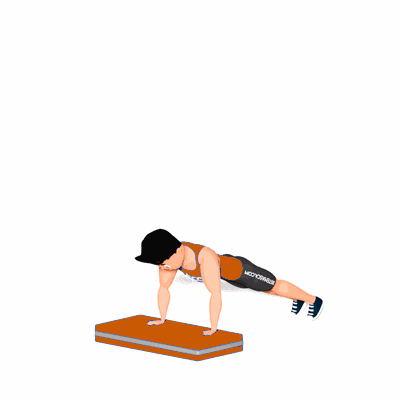

Sprawl Step

O exercício tem como objetivo trabalhar resistência, agilidade e força. Também proporciona uma alta queima de calorias.
Ficha Técnica
Tipo: CrossFit
Grupo Muscular: Corpo
Aparelho: Nenhum
Músculos: Nenhum
Como realizar
- Em pé de frente com um Step, em posição ereta, com os pés separados na largura dos ombros e os joelhos e quadril levemente dobrados, com as mãos à frente e preparado para começar o movimento;
- O movimento começa com a colocação das mãos no Step, próximas aos pés, seguida por um movimento de explosão para levar os pés para trás, assim que as mãos tocam o chão;
- Impulsione-se rapidamente para uma posição de Prancha alta, mantendo os ombros, o quadril e os joelhos alinhados;
- Dê um salto com explosão para levar os pés para a frente, em direção às mãos, depois salte para cima de forma que seus pés saiam do chão, certificando-se de manter o corpo totalmente ereto ao saltar;
- Depois, repita o movimento pelo número de repetições determinado pelo professor.
 RC STORE
RC STORE